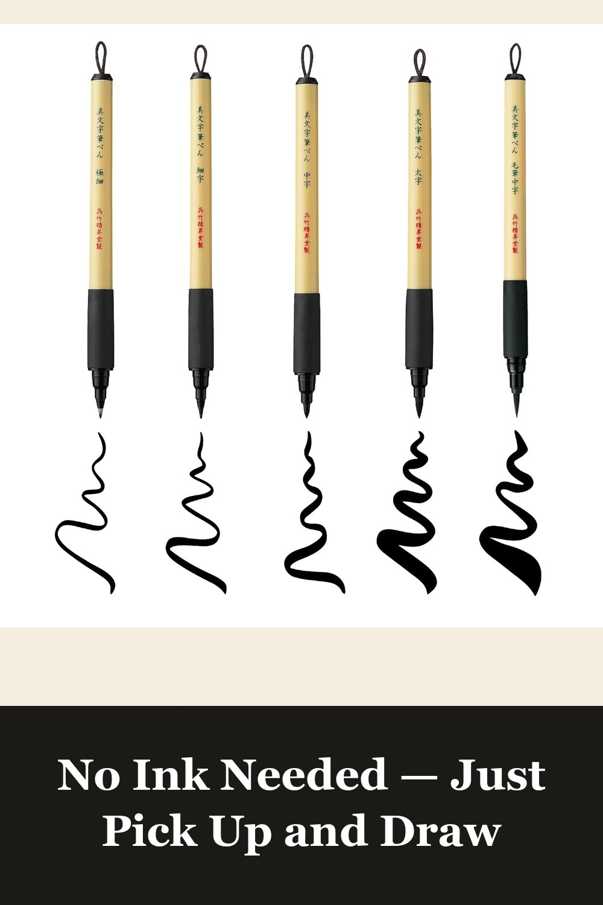
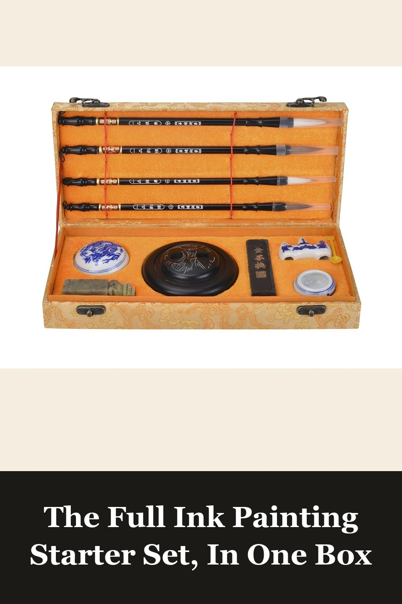
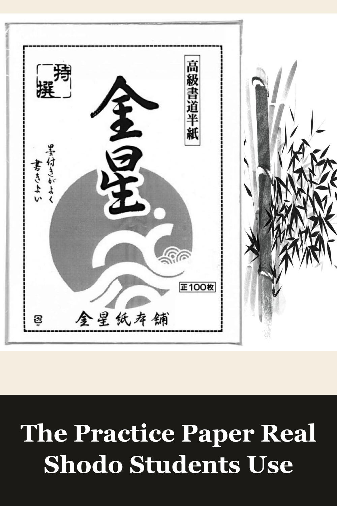

Kuretake Bimoji Brush Pen, 5 pcs set (Extra Fine, Fine, Medium, Large, Medium Brush), Made in Japan
Real brush pens from Kuretake, a genuine Japanese calligraphy brand — five tip sizes, self-inked, no ink stick or water bowl to manage. The easiest way to try sumi-e strokes today.
The Kuretake Bimoji Brush Pen set is a must for every artist or those interested in Japanese calligraphy. The versatile brush tips make it easy to create everything from fine, hair-thin lines to bold, dramatic strokes. The ink is deep black and doesn't fade, giving every piece a clean, professional look.— verified Amazon buyer
View on Amazon →
I-MART Calligraphy Set for Beginners with 4 Brushes, Ink Stone, Ink Stick, Red Ink Paste, Seal, Porcelain Water Bowl, Brush Holder
Everything the traditional way needs — four bamboo-handled brushes, an ink stone, ink stick, water bowl, and a stone seal — packaged in a presentation box that looks good on a desk from day one.
My 14 year old granddaughter loves this set to go with the calligraphy paper I got her for Christmas.— verified Amazon buyer
View on Amazon →
JapanBargain Calligraphy Rice Paper 100 Sheets, Premium Shodo Paper for Ink Wash and Stamping Art, Made in Japan
100 sheets of genuine Japan-made shodo paper, thin and absorbent so ink spreads and bleeds the way it's supposed to. The one accessory that makes a beginner's first strokes actually look right.
I got this paper for use in ink painting and calligraphy. This paper is perfect due to its solid feel and full weaved texture. In the end this is exactly what I was looking for and way cheaper than the local art store, I would definitely buy this for future projects.— verified Amazon buyer
View on Amazon →